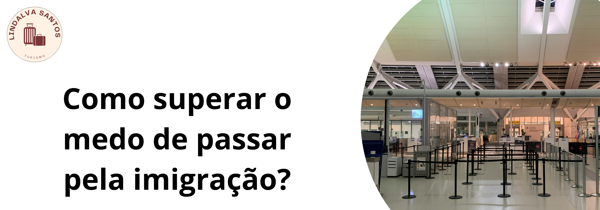

Para muitos viajantes, o momento mais tenso de uma viagem internacional não é o medo de voar ou a barreira do idioma, mas sim o famoso guichê de **controle de imigração**. Estar diante de uma autoridade estrangeira que decidirá se você pode ou não entrar no país causa um frio na barriga compreensível — mesmo em quem está com tudo rigorosamente correto.
A boa notícia é que os agentes de imigração estão ali apenas fazendo o trabalho padrão de segurança. Sabendo exatamente o que esperar e como se comportar, você elimina a ansiedade e passa por essa etapa com total tranquilidade.
Por que a Imigração Causa Tanta Ansiedade?
O medo costuma nascer da incerteza e dos "mitos de internet" sobre pessoas que foram barradas sem motivo. Na realidade, as recusas de entrada são extremamente raras e acontecem quase sempre por falta de comprovação de documentos básicos ou contradições nas respostas.
Os policiais de fronteira buscam apenas duas confirmações simples: se você tem condições financeiras de se manter durante o período declarado e se você realmente pretende retornar ao Brasil ao fim das suas férias.
O Segredo de Ouro: A Pasta Física de Documentos
A melhor arma contra o nervosismo é a organização. Nunca deixe para procurar comprovantes na tela do celular na hora da fila (muitos aeroportos bloqueiam o sinal de internet nessa área). Monte uma pasta física impressa com os seguintes itens na ordem:
- Passaporte Válido (com os vistos necessários fixados, se houver).
- Passagem de Retorno ao Brasil: Este é o item mais importante, pois prova que sua viagem tem data para acabar.
- Voucher de Hospedagem: A confirmação do hotel, resort ou contrato de aluguel por temporada onde você ficará.
- Comprovantes Financeiros: Extrato de cartões internacionais pré-pagos, dinheiro em espécie (moeda local) ou limites de cartões de crédito.
- Seguro Viagem Obrigatório: A apólice impressa (exigida obrigatoriamente na Europa e altamente recomendável no restante do mundo).
As Perguntas Mais Comuns (E Como Responder)
Mantenha a calma, responda apenas o que for perguntado de forma firme, direta e sincera. Se não entender o idioma, fale pausadamente em português ou espanhol; os oficiais estão acostumados a lidar com turistas do mundo todo diariamente. As perguntas de praxe são:
"Qual o motivo da viagem?" — Responda de forma simples: Turismo (ou Férias).
"Quanto tempo vai ficar?" — Diga o número exato de dias (Ex: 10 dias).
"Onde vai se hospedar?" — Diga o nome do hotel principal e aponte para a sua pasta de papéis.
💡 Viaje Sem Medo! Cuidamos de Toda a sua Documentação
O grande diferencial de comprar a sua viagem com a Lindalva Santos Turismo é não se sentir sozinho em nenhum momento da jornada. Nós não apenas emitimos seus bilhetes e hotéis, mas damos uma assessoria completa de pré-embarque.
Ajudamos você a organizar cada papel da sua pasta de comprovações, revisamos as exigências sanitárias e alfandegárias de cada país e orientamos você sobre como agir no aeroporto para que sua única preocupação seja colecionar memórias incríveis.